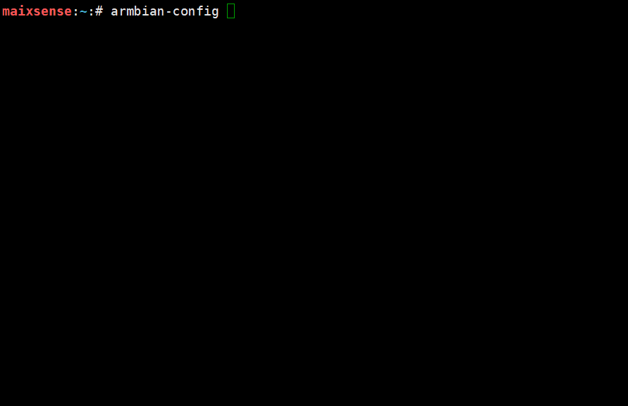

Armbian 配置及使用
配置网络
nmtui

配置SSH连接
系统已默认开启了ssh和ftp，直接连接即可。
配置APT源
打开armbian-config，选中Personal，选择Mirrors，找到合适的apt源，按住TAB键切换到ok，保存即可。

设置时区
打开armbian-config，选中Personal，选择Timezone > Asia >Shanghai设置上海时间（不用找，Debian没有北京时间），按住TAB键切换到ok，保存即可。

设置中文显示
打开armbian-config，选中Personal >Locales>下滑到最下面，空格选中zh.GBK和zh.UTF-8,，然后勾选zh_CN.UTF8设置为系统默认语言，按住TAB键切换到ok，保存，exit退出，下载中文字体，apt-get install fonts-wqy-zenhei，重启后系统环境就变成中文的了。

配置蓝牙
打开armbian-config，选中Network，选择BTinstall安装蓝牙支持包。

可以使用Xftp传输，安装完毕后断电重启即可。
然后就可以使用Bluetoothctl配置蓝牙。
常用命令：
devices 列出活动的蓝牙设备
paired-devices 列出已配对蓝牙设备
pairable <on/off> 是否允许配对
discoverable <on/off> 是否允许被发现
discoverable-timeout [value]设置暴露时间
pair [dev] 配对设备
trust [dev] 信任设备
untrust [dev] 取消设备信任
remove <dev> 移除设备
connect <dev> 连接设备
disconnect [dev] 断开设备连接
quit 退出
help 查看帮助
连接蓝牙设备
使用bluetoothctl连接蓝牙设备。
scan on #扫描设备
scan off #停止扫描
trust XX:XX:XX:XX # 信任设备
pair XX:XX:XX:XX #配对设备
connect XX:XX:XX:XX #连接设备

设置蓝牙音频输入/输出
启用蓝牙音频前，需要先安装pulseaudio即及蓝牙组件
apt install pulseaudio
apt install pulseaudio-module-bluetooth
然后使用pactl查看是否有蓝牙输出设备
pactl list short sinks
切换音频输出到蓝牙
pactl set-default-sink <dev>
log如下：
maixsense:~:# apt install pulseaudio
maixsense:~:# apt install pulseaudio-module-bluetooth
maixsense:~:# pactl list short sinks
0 alsa_output.platform-7032000.codec.stereo-fallback module-alsa-card.c s16le 2ch 44100Hz SUSPENDED
2 bluez_sink.00_26_04_00_73_B1.a2dp_sink module-bluez5-device.c s16le 2ch 44100Hz SUSPENDED
maixsense:~:# pactl set-default-sink 2

然后就可以播放音频到蓝牙设备，或者通过蓝牙连接手机当作蓝牙音箱使用。
配置音量
alsamixer

常用命令
------------------- Help-----------------------
xxEsc 离开 ▒x
xxF1 ? H 帮助 ▒x
xxF2 / 系统信息 ▒x
xxF3 回放控制 ▒x
xxF4 捕获控制 ▒x
xxF5 所有控制 ▒x
xxTab 切换显示模式 ▒x
xxF6 S 选择声卡 ▒x
xxL 刷新屏幕 ▒x
xxLeft 移动到上一个的控制 ▒x
xxRight 移动到下一个的控制 ▒x
xxUp/Down 改变音量 ▒x
xx+ - 改变音量 ▒x
xxPage Up/Dn 大幅改变音量 ▒x
xxEnd 设置音量为0 ▒x
xx0-9 从0到9依次设置音量 ▒x
xxQ W E 增加 左/全部/右声道音量 ▒x
xxZ X C 减少 左/全部/右声道音量 ▒x
xxB 左右声道平衡 ▒x
xxM 切换静音 ▒x
x< > 切换左/右静音 ▒x
xxSpace 切换捕获 ▒x
xx; ' 切换左/右捕获 ▒x
-----------------------------------------------
如果需要控制蓝牙设备音量，需要使用pactl ，并且pcatl也支持控制声卡，所以推荐使用此app控制音量。
##查看输入/输出设备索引
pactl list short sources/sinks
##设置输入/输出音量
pactl set-source/sink-volume index volume
pactl set-default-source/sink
##设置默认输入/输出
示例，设置蓝牙耳机为输出设备，音量为10%,然后增加20%，最后减少30%
maixsense:~:# pactl list short sinks
0 alsa_output.platform-7032000.codec.stereo-fallback module-alsa-card.c s16le 2ch 44100Hz SUSPENDED
2 bluez_sink.00_26_04_00_73_B1.a2dp_sink module-bluez5-device.c s16le 2ch 44100Hz RUNNING
##蓝牙设备一般为bluez_sink
maixsense:~:# pactl set-default-sink 2
maixsense:~:# pactl set-sink-volume 2 10%
maixsense:~:# pactl set-sink-volume 2 +8192
maixsense:~:# pactl set-sink-volume 2 -0x3000
##可选 百分比，十进制数，十六进制数控制，效果相同，并且可以超过100%
媒体播放
媒体播放常用mplayer
apt下载mplayerapt install mplayer
然后执行mplayer badapple_240p.mp4 -vo fbdev2播放视频
或者mplayer G.E.M.邓紫棋\ -\ 光年之外.flac播放音频
在后面加上< /dev/null > /dev/null 2>1 &以便在后台播放

编写c代码
vim helloworld.c
i
#include <stdio.h>
int main()
{
printf("Hello, world\n");
return 0;
}
esc
:wq
gcc hello.c -o hello.o
./hello.o

编写python代码
vim helloworld.py
i
print("hello world!\n")
esc
:wq
python3 helloworld.py

运行神经网络实例
获取1000类物体分类模型
下载站链接zhouyi_test.tar.xz,使用任意方式上传到板子中
##解压压缩包
tar -xvf zhouyi_test.tar.xz
##授予执行权限
cd zhouyi_test
chmod 777 run.sh
##执行1000类物体分类
./run.sh
##后台执行1000类物体分类
./run.sh < /dev/null > /dev/null 2> 1
使用python点亮第一个灯
安装GPIO的python支持库
pip install gpiod
把led正极插入PH5,负极插入GND
编写代码
vim led.py
复制代码进去
import time
import gpiod as gpio
PH_BASE = (8-1)*32 # "PH"
gpiochip1 = gpio.chip("gpiochip1")
led = gpiochip1.get_line((PH_BASE + 5)) # "PH5"
config = gpio.line_request()
config.request_type = gpio.line_request.DIRECTION_OUTPUT
led.request(config)
while led:
led.set_value(0)
time.sleep(1)
print("led on")
led.set_value(1)
time.sleep(1)
print("led off")
执行代码
python3 led.py
效果如下：

设置开机启动
启用开机自启动脚本
vim /lib/systemd/system/rc-local.service
在最后面添加
[Install]
WantedBy=multi-user.target
Alias=rc.local.service
编辑自启动脚本
vim /etc/rc.local
在exit 0前面添加需要启动的服务
mplayer /root/badapple_240p.mp4 -vo fbdev2 < /dev/null > /dev/null 2>1 &
python3 /root/helloworld.py
然后重启即可
注意，此脚本会在用户登录前执行，执行日志如下
[ OK ] Finished Permit User Sessions.
[ 38.569457] rc.local[1322]: hello world!